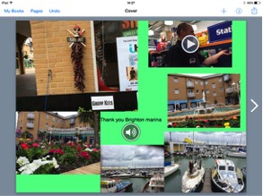

Search the Case Studies
Search the Articles
Search the Membership
Search MirandaNet
MirandaNet Fellowship Casestudy
Membership List | Publications | Research | Specialist Area List | Braided Learning Ejournal

Pop Up Classroom
Meeting things simple with tablets
David Fuller
Year of posting: 2014
Abstract:
The biggest stumbling block with any implementation of a tablet strategy is engaging and encouraging teachers to move with the technology. How this is done and how it works is very much dependent on the school and the age of the pupils that are being taught.
Teachers in some cases have great difficulty in trying to appreciate what the potential of a tablet can bring to the classroom. I have trained a lot of teachers around the country in the past 18 months and a common issue that I find is that a lot of them like the tablets but they tend to just use it for email and Internet browsing. The key is trying to get them past this and that is normally unlocked by finding them a useful app or feature or something that is simple to do that instantly makes a change to the way that the children can learn or find out things for themselves.
Keywords:
tablets, teacher training, iPad, ebooks, literacy, Siri, pupils, tablet strategy
Study
For the past few months, I have had the pleasure of travelling and working in Brighton. This is part of the project for the Tablet Academy who are supporting the Fonthill Foundation's pop up classroom in the Marina. I have been working with a number of schools in Brighton, the work has been primarily involved with iPads but the experiences I will discuss are based on tablets in general. Incidentally, I'm writing this in my car and using the Siri capability of entering text by talking and I'm trying to do the whole of this document this way.
What I want to do is to describe the work that we have completed so far with pupils aged from reception up to year six, as well as SEN children up to the age of 18. This will provide some good guidance and advice in helping decide on a reasonable strategy to get started with these devices.
What I would like to show over the next few pages are different types of activities using tablets - in this case iPads - to engage and demonstrated to the teachers how they can be used with the students in a learning environment. The most important thing is the standard teacher phrase of keeping it simple. The schools involved were a mix of those who have never used tablets in the classroom before, to those with a 1:1 implementation at the beginning of the school year. The tasks took place between April and July 2014.
Conclusions
This will be a brief summary of the main points to come from the project undertaken above.
- Even though the technology is relatively easy to use, and a lot of people have smartphones (using similar technology), teachers still need a lot of hand holding to help them use it effectively in the classroom.
- Keep things simple – until people find their feet, always an essential element to bear in mind. When initially planning this project the original idea was to use lots of apps and do some really exciting things with tablets. What the teachers really wanted was a simpler approach, and so what you originally plan to do, should be halved and possibly reduced again to find that perfect balance, between success or trying to do much!!
- Make use of the creative apps rather then get into an app frenzy. So Book Creator, Strip Design (Comic Life), iMovie Trailers are the early keys to success. Get to use these effectively and they are enough to transform what you do. Then move onto others.
- For some teachers simply get them used to one app, and really get on with it well. Let them move on when they are ready.
- Children are naturals at this technology. It is amazing to see them use iPads at the age of 5 – some have other devices at home, and yet they are perfectly comfortable getting on and using the apps. The staff look on with wonder at their natural ease of use.
- Push the children! With the exercise in photography, you have to raise your and their expectations of what makes a good photograph. Give them the room to show you what they can achieve. As they are naturals, then there is not the usual things that can get in the way of them being creative, literate etc, so push them as the tablets gives them an advantage.
- The child’s engagement and natural ease with the devices was another thing that some teachers found interesting. This is a technology that grabs and holds their attention, and they really like using them.
- Time to reflect. The tablets provide a great medium where children can reflect or complete peer assessment. In another exercise, they were writing books in book creator, and then for the final section of the lesson, they passed on their book to a colleague who then either completed an audio or video feedback on what they thought about their book and placed it in the book. This proved really useful for the SEN children who attended the session.
- The power of the selfie! Yes the selfie camera is a very powerful tool for the tablet. It enables feedback as mentioned above, but also a chance for the teacher to record themselves comfortably in order to introduce topics, or to allow them to Flip the Classroom!
- The Power of Words. It is possible to say what you want in a variety of different ways. You can type, you can speak it, you can record yourself on video, or you can draw it. This is one of the main elements of the tablets that has yet to be explored fully but provide one of the major gains for children and their learning. I have seen it so many times when a child’s inability to type fast has impeded their ability to demonstrate their knowledge, this should be a thing of the past!
Full description with samples of work in the document linked below:
Case Study - 2014 - Pop up classroom (PDF 450 KB)
MirandaNet Members can go to the Log on/off area to edit their own casestudies.
[Back]